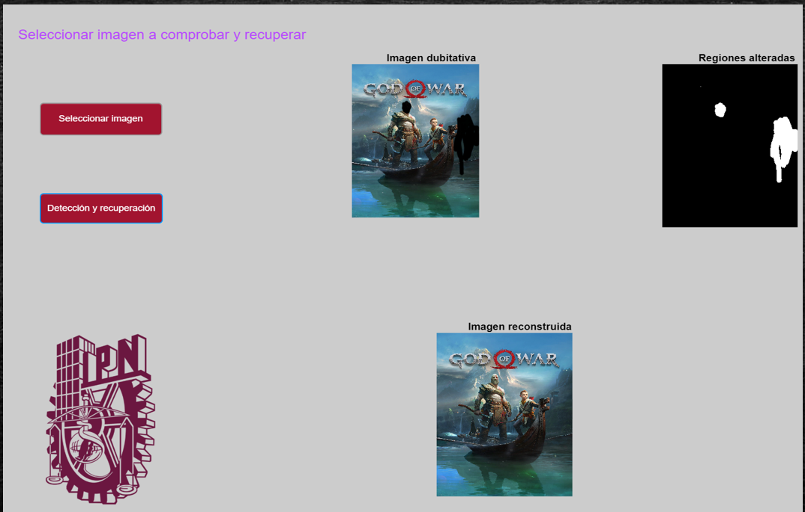
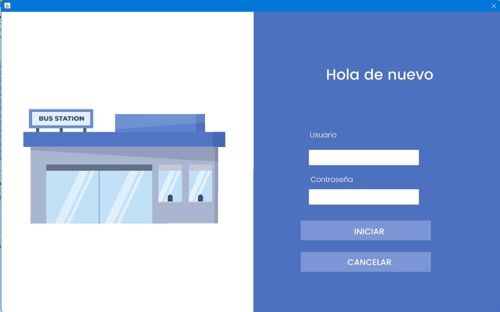

Sobre mi
EXPERIENCIA LABORAL
IDS COMERCIAL | AGOSTO 2023 - PRESENTE
- Capacitación y certificación en arquitectura CELLS
(basada en Web Components).
- SCRUM DEVELOPER Profesional Certification.
Proyecto BBVA (MOBILE RETAIL):
- Apoyo en la resolución de errores en flujos de trabajo
previamente desarrollados.
- Colaboración en la ejecución de pruebas en
dispositivos móviles Android.
- Capacitación sobre la estructura y características del
canal GloMo (Global Mobile).
- Atención de deudas técnicas.
EXPERIENCIA ACADÉMICA
INGENIERÍA EN COMPUTACIÓN EN EL INSTITUTO POLITÉCNICO NACIONAL |
FEBRERO 2019 - DICIEMBRE 2022 EN LA ESCUELA SUPERIOR DE INGENIERÍA
MECÁNICA Y ELÉCTRICA UNIDAD CULHUACÁN.
- Desarrollo de un sistema de detección y autenticación de
alteraciones en imágenes digitales (2022) en el lenguaje
de programación M, empleando la IDE de Matlab.

-
Desarrollo de un sistema con interfaz gráfica en el
lenguaje de programación java, empleando la IDE de Apache
Neatbeans, enlazado a una base de datos SQL.

CONTACTO
- jaime2000vs@gmail.com
- Cel. (55)23186035